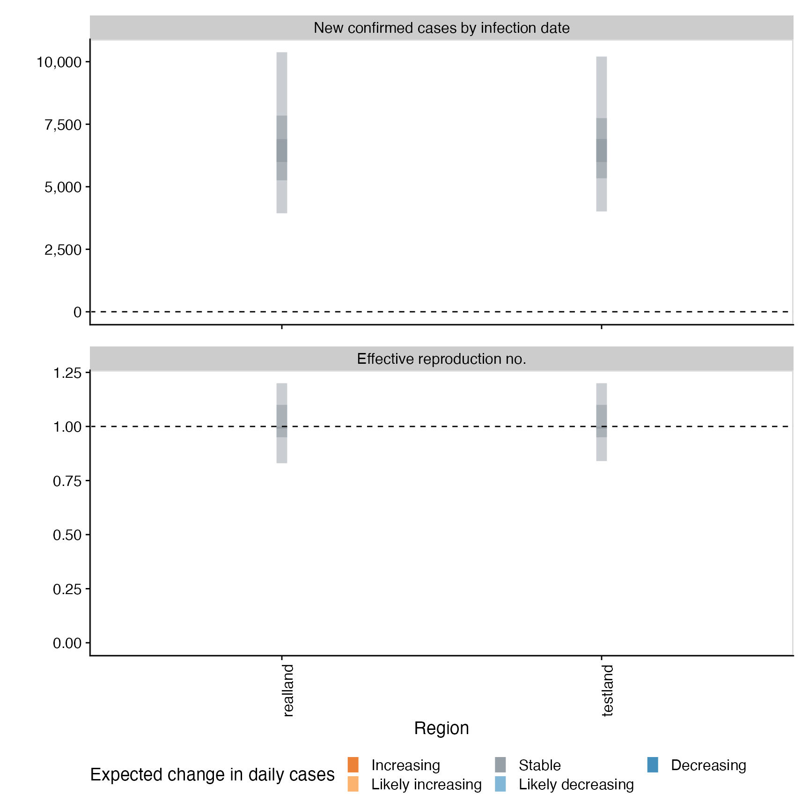
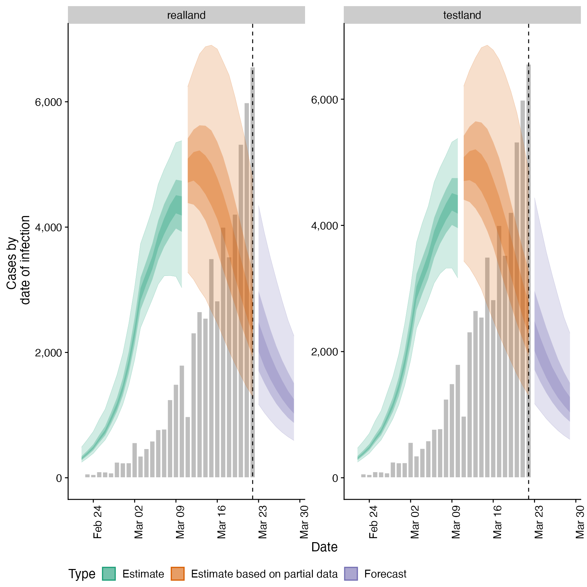
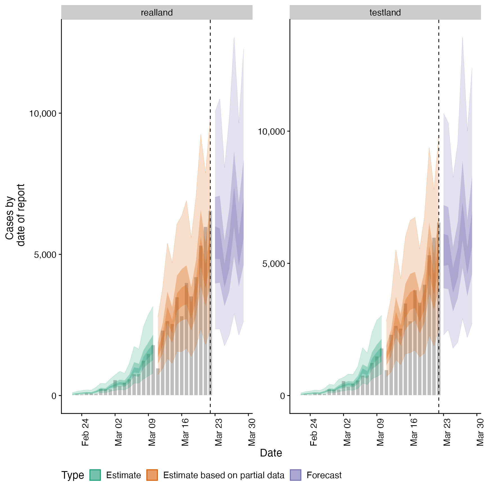
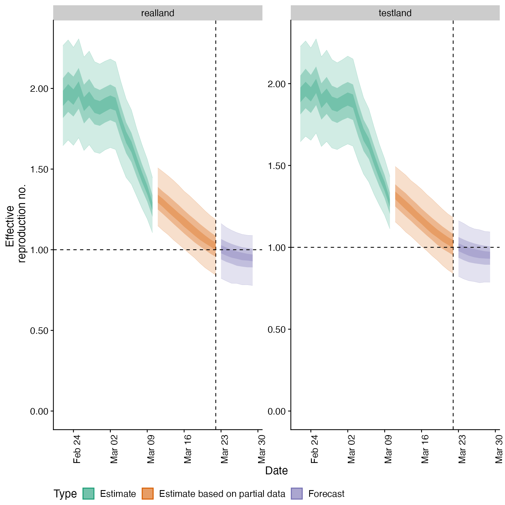
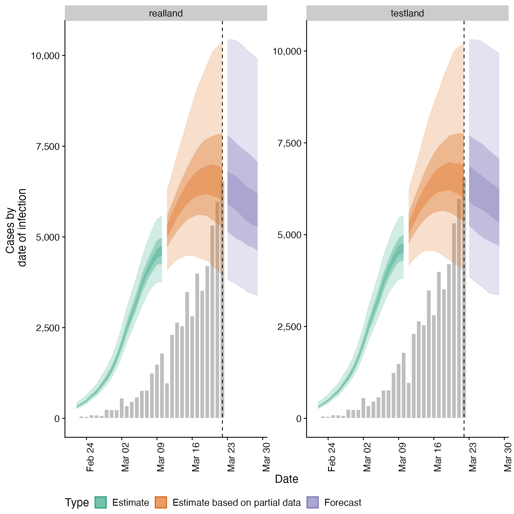
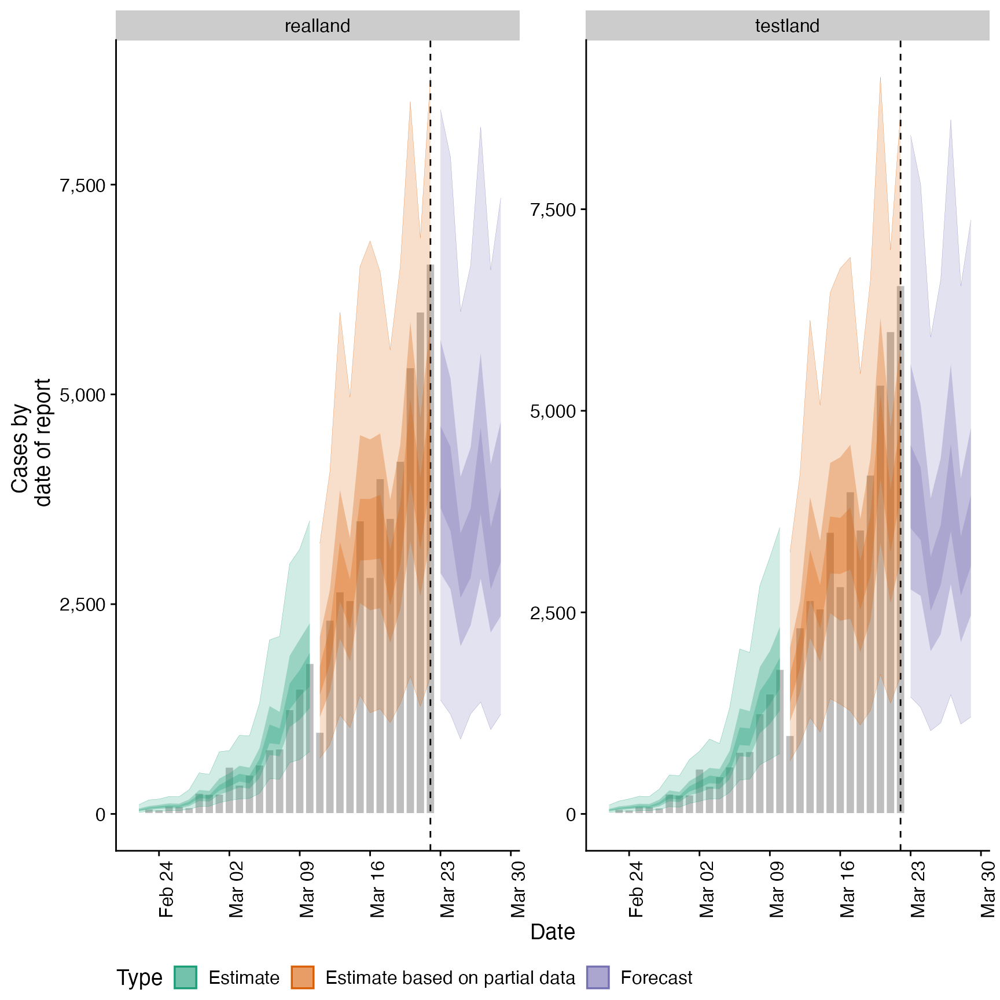
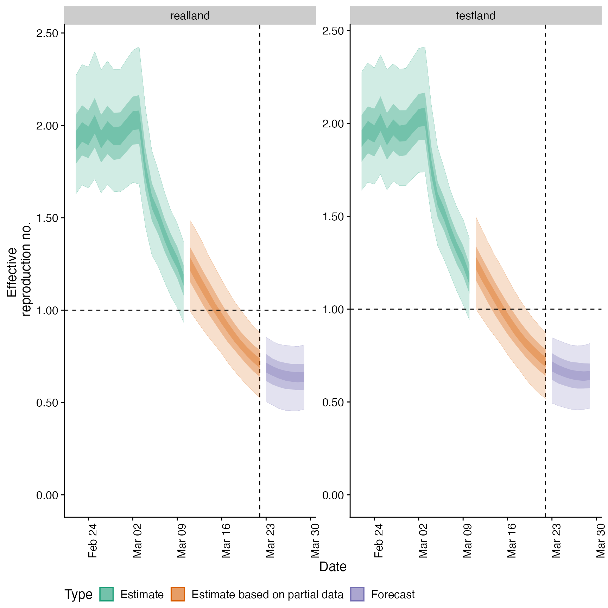
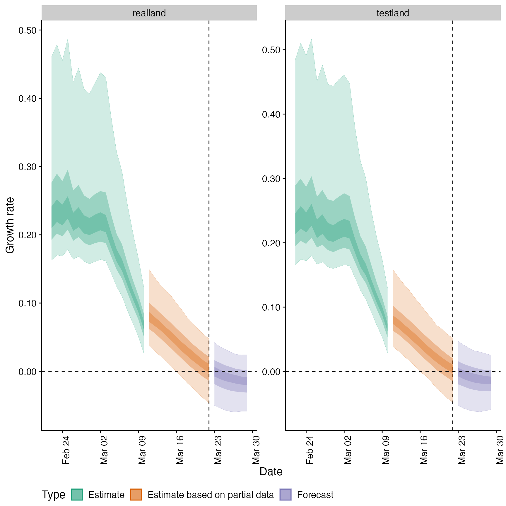

![[Maturing]](figures/lifecycle-maturing.svg) Used to produce summary output either internally in
Used to produce summary output either internally in regional_epinow or externally.
regional_summary( regional_output = NULL, reported_cases, results_dir = NULL, summary_dir = NULL, target_date = NULL, region_scale = "Region", all_regions = TRUE, return_output = FALSE, max_plot = 10 )
Arguments
| regional_output | A list of output as produced by |
|---|---|
| reported_cases | A data frame of confirmed cases (confirm) by date (date), and region ( |
| results_dir | An optional character string indicating the location of the results directory to extract results from. |
| summary_dir | A character string giving the directory in which to store summary of results. |
| target_date | A character string giving the target date for which to extract results (in the format "yyyy-mm-dd"). Defaults to latest available estimates. |
| region_scale | A character string indicating the name to give the regions being summarised. |
| all_regions | Logical, defaults to |
| return_output | Logical, defaults to FALSE. Should output be returned, this automatically updates to TRUE if no directory for saving is specified. |
| max_plot | Numeric, defaults to 10. A multiplicative upper bound on the number of cases shown on the plot. Based on the maximum number of reported cases. |
Value
A list of summary measures and plots
See also
regional_epinow
Examples
# \donttest{ # example delays generation_time <- get_generation_time(disease = "SARS-CoV-2", source = "ganyani") incubation_period <- get_incubation_period(disease = "SARS-CoV-2", source = "lauer") reporting_delay <- estimate_delay(rlnorm(100, log(6), 1), max_value = 30) # example case vector from EpiSoon cases <- example_confirmed[1:30] cases <- data.table::rbindlist(list( data.table::copy(cases)[, region := "testland"], cases[, region := "realland"] )) # run basic nowcasting pipeline out <- regional_epinow( reported_cases = cases, generation_time = generation_time, delays = delay_opts(incubation_period, reporting_delay), output = "region", rt = NULL )#> INFO [2021-03-28 04:24:27] Producing following optional outputs: regions#>#>#>#>#> INFO [2021-03-28 04:24:27] Reporting estimates using data up to: 2020-03-22 #> INFO [2021-03-28 04:24:27] No target directory specified so returning output #> INFO [2021-03-28 04:24:27] Producing estimates for: testland, realland #> INFO [2021-03-28 04:24:27] Regions excluded: none #> INFO [2021-03-28 04:25:03] Completed estimates for: testland #> INFO [2021-03-28 04:25:42] Completed estimates for: realland #> INFO [2021-03-28 04:25:42] Completed regional estimates #> INFO [2021-03-28 04:25:42] Regions with estimates: 2 #> INFO [2021-03-28 04:25:42] Regions with runtime errors: 0 #> INFO [2021-03-28 04:25:42] No target directory specified so returning timingsregional_summary( regional_output = out$regional, reported_cases = cases )#> INFO [2021-03-28 04:25:42] No summary directory specified so returning summary output#> $latest_date #> [1] "2020-03-22" #> #> $results #> $results$estimates #> $results$estimates$summarised #> region date variable strat type median #> 1: testland 2020-02-22 R <NA> estimate 1.919773e+00 #> 2: testland 2020-02-23 R <NA> estimate 1.966207e+00 #> 3: testland 2020-02-24 R <NA> estimate 1.942576e+00 #> 4: testland 2020-02-25 R <NA> estimate 2.004749e+00 #> 5: testland 2020-02-26 R <NA> estimate 1.924409e+00 #> --- #> 414: realland 2020-03-26 reported_cases <NA> forecast 3.195000e+03 #> 415: realland 2020-03-27 reported_cases <NA> forecast 4.082000e+03 #> 416: realland 2020-03-28 reported_cases <NA> forecast 3.042000e+03 #> 417: realland 2020-03-29 reported_cases <NA> forecast 3.395500e+03 #> 418: realland <NA> reporting_overdispersion <NA> <NA> 1.908603e-02 #> mean sd lower_90 lower_50 lower_20 #> 1: 1.932686e+00 0.2056058 1.639067e+00 1.792868e+00 1.873537e+00 #> 2: 1.979748e+00 0.2038565 1.683077e+00 1.838487e+00 1.915499e+00 #> 3: 1.959765e+00 0.1995186 1.672058e+00 1.821878e+00 1.896066e+00 #> 4: 2.022723e+00 0.2035462 1.725750e+00 1.882218e+00 1.957652e+00 #> 5: 1.940486e+00 0.1967903 1.640946e+00 1.804409e+00 1.881030e+00 #> --- #> 414: 3.455668e+03 1703.8883393 1.191950e+03 2.246750e+03 2.813800e+03 #> 415: 4.328987e+03 2165.0577626 1.333950e+03 2.804750e+03 3.570800e+03 #> 416: 3.289775e+03 1668.3006719 1.004900e+03 2.162500e+03 2.676000e+03 #> 417: 3.706099e+03 1932.8980941 1.187950e+03 2.358000e+03 3.002400e+03 #> 418: 4.965138e-02 0.1082384 4.160941e-03 9.986746e-03 1.479112e-02 #> upper_20 upper_50 upper_90 #> 1: 1.964043e+00 2.0451002 2.2763583 #> 2: 2.012919e+00 2.0908443 2.3266278 #> 3: 1.989682e+00 2.0790703 2.2978539 #> 4: 2.052248e+00 2.1452382 2.3682653 #> 5: 1.971676e+00 2.0552627 2.2887147 #> --- #> 414: 3.640000e+03 4367.7500000 6536.1000000 #> 415: 4.605000e+03 5491.2500000 8187.5500000 #> 416: 3.420000e+03 4166.0000000 6482.2000000 #> 417: 3.893000e+03 4677.2500000 7341.7000000 #> 418: 2.507889e-02 0.0401743 0.2158216 #> #> #> #> $summarised_results #> $summarised_results$table #> Region New confirmed cases by infection date #> 1: realland 2514 (1302 -- 4779) #> 2: testland 2504 (1308 -- 4870) #> Expected change in daily cases Effective reproduction no. #> 1: Decreasing 0.72 (0.53 -- 0.88) #> 2: Decreasing 0.71 (0.52 -- 0.88) #> Rate of growth Doubling/halving time (days) #> 1: -0.082 (-0.14 -- -0.034) -8.4 (-20 -- -4.9) #> 2: -0.082 (-0.14 -- -0.034) -8.5 (-21 -- -4.9) #> #> $summarised_results$data #> region estimate median mean sd lower_90 lower_50 #> 1: realland 2514 (1302 -- 4779) 2514.00 2723.00 1119.00 1302.00 1932.00 #> 2: testland 2504 (1308 -- 4870) 2504.00 2718.00 1110.00 1308.00 1933.00 #> 3: realland 0.72 (0.53 -- 0.88) 0.72 0.71 0.11 0.53 0.64 #> 4: testland 0.71 (0.52 -- 0.88) 0.71 0.71 0.11 0.52 0.64 #> lower_20 upper_20 upper_50 upper_90 metric #> 1: 2277.00 2791.00 3303.00 4779.00 New confirmed cases by infection date #> 2: 2266.00 2790.00 3292.00 4870.00 New confirmed cases by infection date #> 3: 0.69 0.74 0.78 0.88 Effective reproduction no. #> 4: 0.69 0.74 0.78 0.88 Effective reproduction no. #> Expected change in daily cases prob_control #> 1: Decreasing 1 #> 2: Decreasing 1 #> 3: Decreasing 1 #> 4: Decreasing 1 #> #> $summarised_results$regions_by_inc #> [1] "realland" "testland" #> #> #> $summary_plot#> #> $summarised_measures #> $summarised_measures$rt #> region date strat type median #> 1: realland 2020-02-22 <NA> estimate 1.9171448 #> 2: realland 2020-02-23 <NA> estimate 1.9629364 #> 3: realland 2020-02-24 <NA> estimate 1.9427858 #> 4: realland 2020-02-25 <NA> estimate 2.0041714 #> 5: realland 2020-02-26 <NA> estimate 1.9248278 #> 6: realland 2020-02-27 <NA> estimate 1.9748316 #> 7: realland 2020-02-28 <NA> estimate 1.9405036 #> 8: realland 2020-02-29 <NA> estimate 1.9462094 #> 9: realland 2020-03-01 <NA> estimate 1.9909573 #> 10: realland 2020-03-02 <NA> estimate 2.0299126 #> 11: realland 2020-03-03 <NA> estimate 2.0328444 #> 12: realland 2020-03-04 <NA> estimate 1.7551344 #> 13: realland 2020-03-05 <NA> estimate 1.5833504 #> 14: realland 2020-03-06 <NA> estimate 1.5059022 #> 15: realland 2020-03-07 <NA> estimate 1.4094045 #> 16: realland 2020-03-08 <NA> estimate 1.3274750 #> 17: realland 2020-03-09 <NA> estimate 1.2588372 #> 18: realland 2020-03-10 <NA> estimate 1.1628271 #> 19: realland 2020-03-11 <NA> estimate based on partial data 1.2527087 #> 20: realland 2020-03-12 <NA> estimate based on partial data 1.1891563 #> 21: realland 2020-03-13 <NA> estimate based on partial data 1.1241071 #> 22: realland 2020-03-14 <NA> estimate based on partial data 1.0649348 #> 23: realland 2020-03-15 <NA> estimate based on partial data 1.0063142 #> 24: realland 2020-03-16 <NA> estimate based on partial data 0.9529782 #> 25: realland 2020-03-17 <NA> estimate based on partial data 0.9024408 #> 26: realland 2020-03-18 <NA> estimate based on partial data 0.8548761 #> 27: realland 2020-03-19 <NA> estimate based on partial data 0.8121329 #> 28: realland 2020-03-20 <NA> estimate based on partial data 0.7759446 #> 29: realland 2020-03-21 <NA> estimate based on partial data 0.7422054 #> 30: realland 2020-03-22 <NA> estimate based on partial data 0.7157564 #> 31: realland 2020-03-23 <NA> forecast 0.6909316 #> 32: realland 2020-03-24 <NA> forecast 0.6704009 #> 33: realland 2020-03-25 <NA> forecast 0.6557140 #> 34: realland 2020-03-26 <NA> forecast 0.6450271 #> 35: realland 2020-03-27 <NA> forecast 0.6373486 #> 36: realland 2020-03-28 <NA> forecast 0.6359592 #> 37: realland 2020-03-29 <NA> forecast 0.6386853 #> 38: testland 2020-02-22 <NA> estimate 1.9197732 #> 39: testland 2020-02-23 <NA> estimate 1.9662071 #> 40: testland 2020-02-24 <NA> estimate 1.9425758 #> 41: testland 2020-02-25 <NA> estimate 2.0047488 #> 42: testland 2020-02-26 <NA> estimate 1.9244085 #> 43: testland 2020-02-27 <NA> estimate 1.9739529 #> 44: testland 2020-02-28 <NA> estimate 1.9444838 #> 45: testland 2020-02-29 <NA> estimate 1.9529441 #> 46: testland 2020-03-01 <NA> estimate 1.9919627 #> 47: testland 2020-03-02 <NA> estimate 2.0282141 #> 48: testland 2020-03-03 <NA> estimate 2.0317714 #> 49: testland 2020-03-04 <NA> estimate 1.7571181 #> 50: testland 2020-03-05 <NA> estimate 1.5914780 #> 51: testland 2020-03-06 <NA> estimate 1.5132201 #> 52: testland 2020-03-07 <NA> estimate 1.4148410 #> 53: testland 2020-03-08 <NA> estimate 1.3282790 #> 54: testland 2020-03-09 <NA> estimate 1.2610075 #> 55: testland 2020-03-10 <NA> estimate 1.1637431 #> 56: testland 2020-03-11 <NA> estimate based on partial data 1.2490602 #> 57: testland 2020-03-12 <NA> estimate based on partial data 1.1855917 #> 58: testland 2020-03-13 <NA> estimate based on partial data 1.1259376 #> 59: testland 2020-03-14 <NA> estimate based on partial data 1.0629002 #> 60: testland 2020-03-15 <NA> estimate based on partial data 1.0038727 #> 61: testland 2020-03-16 <NA> estimate based on partial data 0.9481102 #> 62: testland 2020-03-17 <NA> estimate based on partial data 0.8995471 #> 63: testland 2020-03-18 <NA> estimate based on partial data 0.8549864 #> 64: testland 2020-03-19 <NA> estimate based on partial data 0.8130792 #> 65: testland 2020-03-20 <NA> estimate based on partial data 0.7741838 #> 66: testland 2020-03-21 <NA> estimate based on partial data 0.7420981 #> 67: testland 2020-03-22 <NA> estimate based on partial data 0.7144379 #> 68: testland 2020-03-23 <NA> forecast 0.6901797 #> 69: testland 2020-03-24 <NA> forecast 0.6717358 #> 70: testland 2020-03-25 <NA> forecast 0.6577936 #> 71: testland 2020-03-26 <NA> forecast 0.6490683 #> 72: testland 2020-03-27 <NA> forecast 0.6423062 #> 73: testland 2020-03-28 <NA> forecast 0.6395510 #> 74: testland 2020-03-29 <NA> forecast 0.6417448 #> region date strat type median #> mean sd lower_90 lower_50 lower_20 upper_20 upper_50 #> 1: 1.9342035 0.2109693 1.6270073 1.7907479 1.8636431 1.9674393 2.0575146 #> 2: 1.9814807 0.2107237 1.6773794 1.8374199 1.9116245 2.0176647 2.1090267 #> 3: 1.9610899 0.2075769 1.6605898 1.8226619 1.8930764 1.9941023 2.0816535 #> 4: 2.0228203 0.2126864 1.7110492 1.8803972 1.9559998 2.0565481 2.1489260 #> 5: 1.9393043 0.2061332 1.6346159 1.7986873 1.8749800 1.9710997 2.0571092 #> 6: 1.9852276 0.2083658 1.6790439 1.8442294 1.9238118 2.0224149 2.1065053 #> 7: 1.9511350 0.2057300 1.6420784 1.8131321 1.8920832 1.9891119 2.0680157 #> 8: 1.9542480 0.2055277 1.6397540 1.8187622 1.8931801 1.9947087 2.0703772 #> 9: 1.9936584 0.2101067 1.6651758 1.8574351 1.9344648 2.0356297 2.1141567 #> 10: 2.0318064 0.2171484 1.6914448 1.8959538 1.9741972 2.0770461 2.1558429 #> 11: 2.0377242 0.2226252 1.6820004 1.8990480 1.9791732 2.0803127 2.1635872 #> 12: 1.7616529 0.1964111 1.4494280 1.6411079 1.7117487 1.7974717 1.8742534 #> 13: 1.5860878 0.1714380 1.2977412 1.4831450 1.5498416 1.6203838 1.6876692 #> 14: 1.5053253 0.1591769 1.2360656 1.4109362 1.4718075 1.5430784 1.5995215 #> 15: 1.4058192 0.1488199 1.1524197 1.3176158 1.3753621 1.4447283 1.4953642 #> 16: 1.3208917 0.1420423 1.0748906 1.2412062 1.2914757 1.3587198 1.4115764 #> 17: 1.2544989 0.1385268 1.0139298 1.1727462 1.2263934 1.2906580 1.3435286 #> 18: 1.1598110 0.1322893 0.9337027 1.0790279 1.1318639 1.1944363 1.2437741 #> 19: 1.2478998 0.1477646 0.9952966 1.1542628 1.2148360 1.2861133 1.3427332 #> 20: 1.1863665 0.1438447 0.9456020 1.0923373 1.1507407 1.2223303 1.2793457 #> 21: 1.1259460 0.1396653 0.8967631 1.0307884 1.0906945 1.1591089 1.2149261 #> 22: 1.0670078 0.1348593 0.8506245 0.9750481 1.0332486 1.0978710 1.1548092 #> 23: 1.0103844 0.1294566 0.8081112 0.9244351 0.9781228 1.0361588 1.0936735 #> 24: 0.9560962 0.1239627 0.7649817 0.8731728 0.9250442 0.9837842 1.0342987 #> 25: 0.9053287 0.1190235 0.7144617 0.8247052 0.8763319 0.9308004 0.9788359 #> 26: 0.8576153 0.1149660 0.6714009 0.7847180 0.8296316 0.8827049 0.9284973 #> 27: 0.8137711 0.1120715 0.6309818 0.7432461 0.7887320 0.8370545 0.8826484 #> 28: 0.7742774 0.1103070 0.5924628 0.7036790 0.7503524 0.7995693 0.8462893 #> 29: 0.7396864 0.1093801 0.5588187 0.6681668 0.7164422 0.7663807 0.8111770 #> 30: 0.7098605 0.1088116 0.5268524 0.6396847 0.6863243 0.7386389 0.7842612 #> 31: 0.6855788 0.1083675 0.5037081 0.6164640 0.6625124 0.7151817 0.7623431 #> 32: 0.6657406 0.1076756 0.4861678 0.5971039 0.6450063 0.6965676 0.7384317 #> 33: 0.6516267 0.1069832 0.4673383 0.5837380 0.6298422 0.6814587 0.7227974 #> 34: 0.6418056 0.1062995 0.4574465 0.5740236 0.6185046 0.6722470 0.7148257 #> 35: 0.6365983 0.1059604 0.4558015 0.5707743 0.6125881 0.6667780 0.7088794 #> 36: 0.6354611 0.1063982 0.4555943 0.5670565 0.6092549 0.6642799 0.7080091 #> 37: 0.6388024 0.1079953 0.4617936 0.5688951 0.6119239 0.6663661 0.7097900 #> 38: 1.9326858 0.2056058 1.6390674 1.7928680 1.8735367 1.9640427 2.0451002 #> 39: 1.9797481 0.2038565 1.6830774 1.8384869 1.9154990 2.0129194 2.0908443 #> 40: 1.9597651 0.1995186 1.6720578 1.8218783 1.8960661 1.9896824 2.0790703 #> 41: 2.0227228 0.2035462 1.7257495 1.8822182 1.9576521 2.0522482 2.1452382 #> 42: 1.9404861 0.1967903 1.6409458 1.8044090 1.8810299 1.9716761 2.0552627 #> 43: 1.9883175 0.1986558 1.6888314 1.8511443 1.9352791 2.0212385 2.1051447 #> 44: 1.9558249 0.1961748 1.6644482 1.8220836 1.9014029 1.9876673 2.0699292 #> 45: 1.9607108 0.1960221 1.6645708 1.8284110 1.9043640 1.9941336 2.0704262 #> 46: 2.0019030 0.2004388 1.7009038 1.8701945 1.9457533 2.0363343 2.1158394 #> 47: 2.0414591 0.2074034 1.7352027 1.9092681 1.9810702 2.0771142 2.1579587 #> 48: 2.0483903 0.2134016 1.7384460 1.9111173 1.9858993 2.0841475 2.1649468 #> 49: 1.7714447 0.1890365 1.4952924 1.6495110 1.7179661 1.8027085 1.8730921 #> 50: 1.5955539 0.1638979 1.3397540 1.4919179 1.5541517 1.6241927 1.6845126 #> 51: 1.5141963 0.1511002 1.2669185 1.4212474 1.4786119 1.5475427 1.6014318 #> 52: 1.4132963 0.1416052 1.1827398 1.3257885 1.3787210 1.4474591 1.4982997 #> 53: 1.3269358 0.1361863 1.0974420 1.2421349 1.2978224 1.3583600 1.4105619 #> 54: 1.2590233 0.1341209 1.0246433 1.1778349 1.2264238 1.2896474 1.3419256 #> 55: 1.1626207 0.1293911 0.9416246 1.0828968 1.1309124 1.1929644 1.2410689 #> 56: 1.2493736 0.1458452 1.0012341 1.1563206 1.2154864 1.2842843 1.3403323 #> 57: 1.1860208 0.1429417 0.9501685 1.0932354 1.1502016 1.2179556 1.2735451 #> 58: 1.1243756 0.1396236 0.8990065 1.0294157 1.0920054 1.1538076 1.2096204 #> 59: 1.0645912 0.1353802 0.8536024 0.9693520 1.0322531 1.0954690 1.1462988 #> 60: 1.0073231 0.1305822 0.8081352 0.9163522 0.9730205 1.0365731 1.0882620 #> 61: 0.9527437 0.1256925 0.7560569 0.8650734 0.9198878 0.9789811 1.0323379 #> 62: 0.9019730 0.1212084 0.7091628 0.8196628 0.8681191 0.9276085 0.9800455 #> 63: 0.8545087 0.1173002 0.6663135 0.7773702 0.8238508 0.8797832 0.9301393 #> 64: 0.8111186 0.1141770 0.6179168 0.7356021 0.7840146 0.8379964 0.8860304 #> 65: 0.7722248 0.1118459 0.5784860 0.7001048 0.7487462 0.8026810 0.8469786 #> 66: 0.7383307 0.1101537 0.5442967 0.6683975 0.7169448 0.7695963 0.8120446 #> 67: 0.7092610 0.1088004 0.5189608 0.6411836 0.6875030 0.7414040 0.7833769 #> 68: 0.6857564 0.1077064 0.4939827 0.6198829 0.6642493 0.7185544 0.7628517 #> 69: 0.6666815 0.1065837 0.4798086 0.5995560 0.6475138 0.6989867 0.7420811 #> 70: 0.6532871 0.1056881 0.4696494 0.5879682 0.6339734 0.6845906 0.7271084 #> 71: 0.6440991 0.1049796 0.4607830 0.5776282 0.6231499 0.6728737 0.7161922 #> 72: 0.6394247 0.1047413 0.4589465 0.5722154 0.6166570 0.6669954 0.7122905 #> 73: 0.6386679 0.1053514 0.4600628 0.5724586 0.6138768 0.6646164 0.7082522 #> 74: 0.6422036 0.1071879 0.4663872 0.5745933 0.6176803 0.6664119 0.7069243 #> mean sd lower_90 lower_50 lower_20 upper_20 upper_50 #> upper_90 #> 1: 2.2679803 #> 2: 2.3292597 #> 3: 2.3158514 #> 4: 2.3996537 #> 5: 2.3007578 #> 6: 2.3486668 #> 7: 2.3019441 #> 8: 2.3020685 #> 9: 2.3556192 #> 10: 2.4059060 #> 11: 2.4256223 #> 12: 2.0934728 #> 13: 1.8627966 #> 14: 1.7564565 #> 15: 1.6385581 #> 16: 1.5392306 #> 17: 1.4692578 #> 18: 1.3717444 #> 19: 1.4878596 #> 20: 1.4291796 #> 21: 1.3642021 #> 22: 1.2908898 #> 23: 1.2267121 #> 24: 1.1635928 #> 25: 1.1044278 #> 26: 1.0474861 #> 27: 1.0001665 #> 28: 0.9554766 #> 29: 0.9117248 #> 30: 0.8762152 #> 31: 0.8528035 #> 32: 0.8318412 #> 33: 0.8145567 #> 34: 0.8097103 #> 35: 0.8058678 #> 36: 0.8034658 #> 37: 0.8116914 #> 38: 2.2763583 #> 39: 2.3266278 #> 40: 2.2978539 #> 41: 2.3682653 #> 42: 2.2887147 #> 43: 2.3202445 #> 44: 2.2909067 #> 45: 2.2964728 #> 46: 2.3490124 #> 47: 2.4029029 #> 48: 2.4121223 #> 49: 2.0994775 #> 50: 1.8673097 #> 51: 1.7608023 #> 52: 1.6382688 #> 53: 1.5495658 #> 54: 1.4829779 #> 55: 1.3790855 #> 56: 1.4978482 #> 57: 1.4254946 #> 58: 1.3555664 #> 59: 1.2878436 #> 60: 1.2308695 #> 61: 1.1661410 #> 62: 1.1039383 #> 63: 1.0477919 #> 64: 0.9965955 #> 65: 0.9499685 #> 66: 0.9103794 #> 67: 0.8752383 #> 68: 0.8463717 #> 69: 0.8313991 #> 70: 0.8185135 #> 71: 0.8066673 #> 72: 0.8019355 #> 73: 0.8046143 #> 74: 0.8149309 #> upper_90 #> #> $summarised_measures$growth_rate #> region date strat type median #> 1: realland 2020-02-22 <NA> estimate 0.223117134 #> 2: realland 2020-02-23 <NA> estimate 0.233558158 #> 3: realland 2020-02-24 <NA> estimate 0.228374743 #> 4: realland 2020-02-25 <NA> estimate 0.242104358 #> 5: realland 2020-02-26 <NA> estimate 0.223331298 #> 6: realland 2020-02-27 <NA> estimate 0.233698730 #> 7: realland 2020-02-28 <NA> estimate 0.225893434 #> 8: realland 2020-02-29 <NA> estimate 0.226090770 #> 9: realland 2020-03-01 <NA> estimate 0.235967407 #> 10: realland 2020-03-02 <NA> estimate 0.243617833 #> 11: realland 2020-03-03 <NA> estimate 0.244742959 #> 12: realland 2020-03-04 <NA> estimate 0.185857849 #> 13: realland 2020-03-05 <NA> estimate 0.147365374 #> 14: realland 2020-03-06 <NA> estimate 0.130131476 #> 15: realland 2020-03-07 <NA> estimate 0.106979962 #> 16: realland 2020-03-08 <NA> estimate 0.086122293 #> 17: realland 2020-03-09 <NA> estimate 0.069261297 #> 18: realland 2020-03-10 <NA> estimate 0.044894776 #> 19: realland 2020-03-11 <NA> estimate based on partial data 0.067365039 #> 20: realland 2020-03-12 <NA> estimate based on partial data 0.051816551 #> 21: realland 2020-03-13 <NA> estimate based on partial data 0.034415659 #> 22: realland 2020-03-14 <NA> estimate based on partial data 0.017621355 #> 23: realland 2020-03-15 <NA> estimate based on partial data 0.001712638 #> 24: realland 2020-03-16 <NA> estimate based on partial data -0.013014110 #> 25: realland 2020-03-17 <NA> estimate based on partial data -0.027270404 #> 26: realland 2020-03-18 <NA> estimate based on partial data -0.041042174 #> 27: realland 2020-03-19 <NA> estimate based on partial data -0.052898252 #> 28: realland 2020-03-20 <NA> estimate based on partial data -0.064085191 #> 29: realland 2020-03-21 <NA> estimate based on partial data -0.074187666 #> 30: realland 2020-03-22 <NA> estimate based on partial data -0.082450440 #> 31: realland 2020-03-23 <NA> forecast -0.089537809 #> 32: realland 2020-03-24 <NA> forecast -0.095046077 #> 33: realland 2020-03-25 <NA> forecast -0.099401749 #> 34: realland 2020-03-26 <NA> forecast -0.102226549 #> 35: realland 2020-03-27 <NA> forecast -0.103641396 #> 36: realland 2020-03-28 <NA> forecast -0.104450564 #> 37: realland 2020-03-29 <NA> forecast -0.104238651 #> 38: testland 2020-02-22 <NA> estimate 0.224500967 #> 39: testland 2020-02-23 <NA> estimate 0.235736334 #> 40: testland 2020-02-24 <NA> estimate 0.231452524 #> 41: testland 2020-02-25 <NA> estimate 0.244415435 #> 42: testland 2020-02-26 <NA> estimate 0.226137797 #> 43: testland 2020-02-27 <NA> estimate 0.237338064 #> 44: testland 2020-02-28 <NA> estimate 0.229681889 #> 45: testland 2020-02-29 <NA> estimate 0.230950450 #> 46: testland 2020-03-01 <NA> estimate 0.239714403 #> 47: testland 2020-03-02 <NA> estimate 0.247191688 #> 48: testland 2020-03-03 <NA> estimate 0.248180351 #> 49: testland 2020-03-04 <NA> estimate 0.188508672 #> 50: testland 2020-03-05 <NA> estimate 0.149595429 #> 51: testland 2020-03-06 <NA> estimate 0.131560211 #> 52: testland 2020-03-07 <NA> estimate 0.107749091 #> 53: testland 2020-03-08 <NA> estimate 0.086613561 #> 54: testland 2020-03-09 <NA> estimate 0.069030463 #> 55: testland 2020-03-10 <NA> estimate 0.043911010 #> 56: testland 2020-03-11 <NA> estimate based on partial data 0.065823691 #> 57: testland 2020-03-12 <NA> estimate based on partial data 0.049867148 #> 58: testland 2020-03-13 <NA> estimate based on partial data 0.034107361 #> 59: testland 2020-03-14 <NA> estimate based on partial data 0.017315969 #> 60: testland 2020-03-15 <NA> estimate based on partial data 0.001157407 #> 61: testland 2020-03-16 <NA> estimate based on partial data -0.014262796 #> 62: testland 2020-03-17 <NA> estimate based on partial data -0.028583511 #> 63: testland 2020-03-18 <NA> estimate based on partial data -0.041445704 #> 64: testland 2020-03-19 <NA> estimate based on partial data -0.053588591 #> 65: testland 2020-03-20 <NA> estimate based on partial data -0.064632534 #> 66: testland 2020-03-21 <NA> estimate based on partial data -0.073848359 #> 67: testland 2020-03-22 <NA> estimate based on partial data -0.081822313 #> 68: testland 2020-03-23 <NA> forecast -0.087960799 #> 69: testland 2020-03-24 <NA> forecast -0.093390251 #> 70: testland 2020-03-25 <NA> forecast -0.097305630 #> 71: testland 2020-03-26 <NA> forecast -0.100786797 #> 72: testland 2020-03-27 <NA> forecast -0.101964624 #> 73: testland 2020-03-28 <NA> forecast -0.102836245 #> 74: testland 2020-03-29 <NA> forecast -0.102170217 #> region date strat type median #> mean sd lower_90 lower_50 lower_20 #> 1: 0.689231446 18.20988154 0.1590951084 0.191345014 0.209079149 #> 2: 0.825920101 23.74723515 0.1682828362 0.200468429 0.219418140 #> 3: 0.712398976 19.24235615 0.1681704855 0.198524369 0.215376030 #> 4: 0.916858457 27.44433870 0.1786453297 0.209796856 0.227325095 #> 5: 0.586035779 14.11927232 0.1648473024 0.195688054 0.211016588 #> 6: 0.704539245 18.64385762 0.1718568148 0.203752644 0.219856412 #> 7: 0.568831864 13.13794866 0.1656633089 0.197248282 0.213801417 #> 8: 0.556526712 12.49294798 0.1647033525 0.198312425 0.214518669 #> 9: 0.626203173 14.93049136 0.1705888303 0.205084498 0.222222694 #> 10: 0.697662994 17.46182036 0.1766981004 0.211877826 0.229913845 #> 11: 0.695158275 17.20931793 0.1772035401 0.212694401 0.231820893 #> 12: 0.274966734 2.72207539 0.1256031821 0.163793435 0.177219915 #> 13: 0.185149451 0.97234059 0.0868197724 0.126251060 0.140264837 #> 14: 0.156938654 0.67430175 0.0669482461 0.107855211 0.121715030 #> 15: 0.121338672 0.34871374 0.0431443352 0.084174008 0.098622325 #> 16: 0.093997852 0.19744689 0.0213982400 0.064138708 0.078445363 #> 17: 0.073821762 0.12769153 0.0038188968 0.046636414 0.061044151 #> 18: 0.045419392 0.06368988 -0.0208122391 0.021433155 0.036410075 #> 19: 0.073845536 0.15793216 -0.0012301755 0.041662143 0.057904817 #> 20: 0.053655369 0.08073767 -0.0155722251 0.025964945 0.041491983 #> 21: 0.035589041 0.05186089 -0.0304423018 0.009116739 0.025383158 #> 22: 0.018549806 0.04089260 -0.0432870451 -0.006886757 0.009453963 #> 23: 0.002394917 0.03699867 -0.0561761841 -0.021982052 -0.006013755 #> 24: -0.013050465 0.03524638 -0.0691370321 -0.036806831 -0.021202470 #> 25: -0.027525785 0.03417594 -0.0817775335 -0.049958354 -0.035389956 #> 26: -0.041204785 0.03347945 -0.0949690682 -0.062979417 -0.048695407 #> 27: -0.053859512 0.03312077 -0.1074525091 -0.074808138 -0.061471685 #> 28: -0.065335339 0.03302910 -0.1201159539 -0.085314787 -0.072211731 #> 29: -0.075444600 0.03308601 -0.1313502829 -0.095574544 -0.081927581 #> 30: -0.084198795 0.03314536 -0.1420079790 -0.104711623 -0.090800889 #> 31: -0.091327886 0.03310512 -0.1491917353 -0.111795383 -0.097920427 #> 32: -0.097135491 0.03287560 -0.1539994604 -0.117192023 -0.103269948 #> 33: -0.101211150 0.03249588 -0.1576167313 -0.121075736 -0.106715996 #> 34: -0.103979898 0.03202014 -0.1588878842 -0.123285244 -0.109144002 #> 35: -0.105366950 0.03160083 -0.1597905074 -0.123875555 -0.111344108 #> 36: -0.105537647 0.03138428 -0.1606143549 -0.124943857 -0.111506080 #> 37: -0.104379866 0.03148419 -0.1577577591 -0.124309601 -0.111208323 #> 38: 0.316795173 2.06347578 0.1597045145 0.192302425 0.209994081 #> 39: 0.346699570 2.71763171 0.1685370492 0.202216057 0.220608203 #> 40: 0.333846871 2.48162624 0.1667680811 0.199304506 0.216976662 #> 41: 0.384866101 3.75017181 0.1771785362 0.209836764 0.230343351 #> 42: 0.326719754 2.43041556 0.1659366568 0.196481079 0.213450433 #> 43: 0.369399683 3.49012565 0.1710373224 0.204162168 0.222321490 #> 44: 0.345495514 2.91561284 0.1659083917 0.199354577 0.216079401 #> 45: 0.351694987 3.05883018 0.1662453923 0.200264589 0.217252630 #> 46: 0.382833872 3.76368602 0.1722899972 0.207838009 0.225521699 #> 47: 0.409912544 4.35593858 0.1808754248 0.215673247 0.233955562 #> 48: 0.406701158 4.15884988 0.1833767388 0.216711127 0.235213347 #> 49: 0.236072202 0.80844197 0.1343319871 0.167412988 0.179009710 #> 50: 0.173435712 0.30766035 0.0958335706 0.130190809 0.141757164 #> 51: 0.148844494 0.19955434 0.0765900550 0.111163727 0.123818145 #> 52: 0.117742388 0.10553207 0.0522073264 0.086951650 0.100461830 #> 53: 0.092302498 0.06540363 0.0282207107 0.066233290 0.079187077 #> 54: 0.072822975 0.04989096 0.0084589810 0.048364871 0.061586527 #> 55: 0.045224881 0.03939090 -0.0170620304 0.023374697 0.036229136 #> 56: 0.071226260 0.05539380 0.0003064795 0.042009718 0.056893640 #> 57: 0.052272278 0.04614535 -0.0150264658 0.025777494 0.040917526 #> 58: 0.034646699 0.04233545 -0.0290485475 0.008415117 0.025019278 #> 59: 0.017805815 0.03990353 -0.0428873243 -0.008220245 0.008648704 #> 60: 0.001697756 0.03794200 -0.0556271155 -0.023748186 -0.007501843 #> 61: -0.013726719 0.03628086 -0.0693766493 -0.038285471 -0.022887921 #> 62: -0.028162505 0.03498460 -0.0832575464 -0.052110152 -0.037236674 #> 63: -0.041755027 0.03403758 -0.0975369290 -0.064729240 -0.050600320 #> 64: -0.054269498 0.03342742 -0.1111029488 -0.076067646 -0.062364994 #> 65: -0.065558986 0.03307942 -0.1212342206 -0.086637738 -0.072599036 #> 66: -0.075447810 0.03288976 -0.1312127235 -0.095622007 -0.081720252 #> 67: -0.083959579 0.03273764 -0.1405433649 -0.103613943 -0.089559468 #> 68: -0.090839586 0.03254589 -0.1468096585 -0.109990030 -0.096235403 #> 69: -0.096403787 0.03223797 -0.1533942686 -0.116033037 -0.101422220 #> 70: -0.100255746 0.03185425 -0.1562233396 -0.119952827 -0.105328658 #> 71: -0.102832014 0.03143929 -0.1593925769 -0.122599481 -0.108565826 #> 72: -0.104062070 0.03113462 -0.1571243096 -0.123526590 -0.110189625 #> 73: -0.104124290 0.03107516 -0.1559979131 -0.123692966 -0.110264072 #> 74: -0.102916384 0.03137180 -0.1551924386 -0.121765156 -0.110054630 #> mean sd lower_90 lower_50 lower_20 #> upper_20 upper_50 upper_90 #> 1: 0.239979296 0.278462324 4.514573e-01 #> 2: 0.250545674 0.291068675 4.774981e-01 #> 3: 0.244303714 0.283094588 4.669625e-01 #> 4: 0.260439142 0.301618816 5.164968e-01 #> 5: 0.239117029 0.274099866 4.622220e-01 #> 6: 0.250595144 0.288835334 4.959838e-01 #> 7: 0.241873790 0.277154707 4.734142e-01 #> 8: 0.242803560 0.279034365 4.784419e-01 #> 9: 0.252346839 0.292486958 5.011469e-01 #> 10: 0.261394858 0.304681586 5.226948e-01 #> 11: 0.262265500 0.305100367 5.207655e-01 #> 12: 0.196375368 0.223374687 3.520042e-01 #> 13: 0.156945323 0.176409892 2.717868e-01 #> 14: 0.138748378 0.157994299 2.419657e-01 #> 15: 0.115057644 0.131099650 1.987741e-01 #> 16: 0.094924841 0.108204011 1.652905e-01 #> 17: 0.077653792 0.091265145 1.400260e-01 #> 18: 0.052288035 0.066642046 1.033872e-01 #> 19: 0.076612790 0.092252368 1.507693e-01 #> 20: 0.059557907 0.075464867 1.229698e-01 #> 21: 0.043410063 0.058267926 9.936662e-02 #> 22: 0.026995902 0.041490525 8.086171e-02 #> 23: 0.010556618 0.025353403 6.287258e-02 #> 24: -0.004524637 0.009685968 4.504041e-02 #> 25: -0.019199696 -0.005879617 2.810368e-02 #> 26: -0.033361496 -0.019705351 1.327056e-02 #> 27: -0.045831992 -0.033310226 4.330413e-05 #> 28: -0.056776466 -0.044633867 -1.177305e-02 #> 29: -0.066319695 -0.053446776 -2.287645e-02 #> 30: -0.074910192 -0.061708441 -3.418439e-02 #> 31: -0.081798967 -0.068483422 -4.238251e-02 #> 32: -0.087424811 -0.074791421 -4.843078e-02 #> 33: -0.092508791 -0.079695975 -5.215724e-02 #> 34: -0.095353535 -0.082754635 -5.387552e-02 #> 35: -0.096621016 -0.084362975 -5.548824e-02 #> 36: -0.097131392 -0.084455530 -5.577646e-02 #> 37: -0.096628134 -0.083718167 -5.393164e-02 #> 38: 0.240713322 0.278317703 4.755239e-01 #> 39: 0.252767764 0.290540430 5.015564e-01 #> 40: 0.245978217 0.280843976 4.885234e-01 #> 41: 0.261529959 0.300021088 5.337233e-01 #> 42: 0.240604992 0.274635291 4.699306e-01 #> 43: 0.253431735 0.290759928 5.059055e-01 #> 44: 0.245120673 0.282262247 4.844784e-01 #> 45: 0.245955700 0.284527365 4.923736e-01 #> 46: 0.255923240 0.298370960 5.189463e-01 #> 47: 0.265201348 0.309912481 5.421295e-01 #> 48: 0.267304234 0.309914634 5.411016e-01 #> 49: 0.199086867 0.224664828 3.527158e-01 #> 50: 0.158974272 0.177305939 2.689629e-01 #> 51: 0.139899573 0.157809852 2.334815e-01 #> 52: 0.115814611 0.130527790 1.914726e-01 #> 53: 0.094169852 0.108580390 1.620295e-01 #> 54: 0.077110461 0.091577795 1.426423e-01 #> 55: 0.051976033 0.065524666 1.081656e-01 #> 56: 0.076400467 0.093774121 1.520293e-01 #> 57: 0.058899584 0.074939243 1.221225e-01 #> 58: 0.042332843 0.057744768 9.872903e-02 #> 59: 0.025875479 0.040340397 8.123123e-02 #> 60: 0.010542435 0.023954125 6.415887e-02 #> 61: -0.005584515 0.008889018 4.601473e-02 #> 62: -0.020013411 -0.005680670 3.014245e-02 #> 63: -0.033695037 -0.019503783 1.324978e-02 #> 64: -0.045569793 -0.031950110 -1.111196e-03 #> 65: -0.055987950 -0.043138222 -1.328365e-02 #> 66: -0.066269105 -0.053213878 -2.492384e-02 #> 67: -0.074395454 -0.061547591 -3.373466e-02 #> 68: -0.081052836 -0.068695294 -4.180334e-02 #> 69: -0.086361634 -0.074239768 -4.719833e-02 #> 70: -0.089898941 -0.078446694 -5.188776e-02 #> 71: -0.092681357 -0.081219616 -5.570805e-02 #> 72: -0.094421454 -0.083132635 -5.634272e-02 #> 73: -0.095597151 -0.083562480 -5.532069e-02 #> 74: -0.095365115 -0.083442660 -5.369231e-02 #> upper_20 upper_50 upper_90 #> #> $summarised_measures$cases_by_infection #> region date strat type median mean #> 1: realland 2020-02-22 <NA> estimate 305.4 331.2 #> 2: realland 2020-02-23 <NA> estimate 386.9 416.8 #> 3: realland 2020-02-24 <NA> estimate 475.7 510.8 #> 4: realland 2020-02-25 <NA> estimate 612.7 650.9 #> 5: realland 2020-02-26 <NA> estimate 738.4 779.1 #> 6: realland 2020-02-27 <NA> estimate 937.5 982.5 #> 7: realland 2020-02-28 <NA> estimate 1148.7 1198.5 #> 8: realland 2020-02-29 <NA> estimate 1427.6 1481.7 #> 9: realland 2020-03-01 <NA> estimate 1811.0 1866.9 #> 10: realland 2020-03-02 <NA> estimate 2317.3 2366.0 #> 11: realland 2020-03-03 <NA> estimate 2925.7 2972.0 #> 12: realland 2020-03-04 <NA> estimate 3187.3 3224.3 #> 13: realland 2020-03-05 <NA> estimate 3438.0 3474.4 #> 14: realland 2020-03-06 <NA> estimate 3769.0 3810.5 #> 15: realland 2020-03-07 <NA> estimate 4014.8 4034.8 #> 16: realland 2020-03-08 <NA> estimate 4197.6 4205.7 #> 17: realland 2020-03-09 <NA> estimate 4370.2 4347.7 #> 18: realland 2020-03-10 <NA> estimate 4334.2 4308.7 #> 19: realland 2020-03-11 <NA> estimate based on partial data 4896.5 4865.1 #> 20: realland 2020-03-12 <NA> estimate based on partial data 4962.2 4934.8 #> 21: realland 2020-03-13 <NA> estimate based on partial data 4949.6 4938.8 #> 22: realland 2020-03-14 <NA> estimate based on partial data 4879.9 4872.9 #> 23: realland 2020-03-15 <NA> estimate based on partial data 4704.9 4738.2 #> 24: realland 2020-03-16 <NA> estimate based on partial data 4462.1 4538.8 #> 25: realland 2020-03-17 <NA> estimate based on partial data 4185.4 4288.3 #> 26: realland 2020-03-18 <NA> estimate based on partial data 3869.9 3996.5 #> 27: realland 2020-03-19 <NA> estimate based on partial data 3527.6 3679.7 #> 28: realland 2020-03-20 <NA> estimate based on partial data 3178.5 3353.6 #> 29: realland 2020-03-21 <NA> estimate based on partial data 2839.5 3032.1 #> 30: realland 2020-03-22 <NA> estimate based on partial data 2514.5 2723.6 #> 31: realland 2020-03-23 <NA> forecast 2222.3 2437.8 #> 32: realland 2020-03-24 <NA> forecast 1969.2 2175.1 #> 33: realland 2020-03-25 <NA> forecast 1746.5 1941.4 #> 34: realland 2020-03-26 <NA> forecast 1546.4 1733.1 #> 35: realland 2020-03-27 <NA> forecast 1393.7 1549.5 #> 36: realland 2020-03-28 <NA> forecast 1259.4 1388.9 #> 37: realland 2020-03-29 <NA> forecast 1137.6 1250.7 #> 38: testland 2020-02-22 <NA> estimate 307.5 326.7 #> 39: testland 2020-02-23 <NA> estimate 388.4 411.1 #> 40: testland 2020-02-24 <NA> estimate 478.1 504.1 #> 41: testland 2020-02-25 <NA> estimate 611.1 642.7 #> 42: testland 2020-02-26 <NA> estimate 738.8 770.2 #> 43: testland 2020-02-27 <NA> estimate 939.3 972.8 #> 44: testland 2020-02-28 <NA> estimate 1153.4 1188.9 #> 45: testland 2020-02-29 <NA> estimate 1432.1 1472.9 #> 46: testland 2020-03-01 <NA> estimate 1817.1 1859.8 #> 47: testland 2020-03-02 <NA> estimate 2323.2 2362.0 #> 48: testland 2020-03-03 <NA> estimate 2926.1 2972.7 #> 49: testland 2020-03-04 <NA> estimate 3191.0 3230.3 #> 50: testland 2020-03-05 <NA> estimate 3440.3 3485.1 #> 51: testland 2020-03-06 <NA> estimate 3781.1 3825.2 #> 52: testland 2020-03-07 <NA> estimate 4035.2 4051.6 #> 53: testland 2020-03-08 <NA> estimate 4226.2 4222.7 #> 54: testland 2020-03-09 <NA> estimate 4376.5 4363.1 #> 55: testland 2020-03-10 <NA> estimate 4327.5 4320.3 #> 56: testland 2020-03-11 <NA> estimate based on partial data 4871.1 4872.9 #> 57: testland 2020-03-12 <NA> estimate based on partial data 4936.0 4936.4 #> 58: testland 2020-03-13 <NA> estimate based on partial data 4898.2 4933.8 #> 59: testland 2020-03-14 <NA> estimate based on partial data 4811.1 4861.8 #> 60: testland 2020-03-15 <NA> estimate based on partial data 4644.6 4722.2 #> 61: testland 2020-03-16 <NA> estimate based on partial data 4421.9 4519.6 #> 62: testland 2020-03-17 <NA> estimate based on partial data 4135.2 4268.1 #> 63: testland 2020-03-18 <NA> estimate based on partial data 3819.6 3977.3 #> 64: testland 2020-03-19 <NA> estimate based on partial data 3494.8 3663.0 #> 65: testland 2020-03-20 <NA> estimate based on partial data 3145.9 3340.5 #> 66: testland 2020-03-21 <NA> estimate based on partial data 2814.3 3022.9 #> 67: testland 2020-03-22 <NA> estimate based on partial data 2504.2 2718.4 #> 68: testland 2020-03-23 <NA> forecast 2225.6 2436.2 #> 69: testland 2020-03-24 <NA> forecast 1967.0 2176.7 #> 70: testland 2020-03-25 <NA> forecast 1748.6 1945.7 #> 71: testland 2020-03-26 <NA> forecast 1558.2 1739.7 #> 72: testland 2020-03-27 <NA> forecast 1400.4 1557.9 #> 73: testland 2020-03-28 <NA> forecast 1260.4 1398.7 #> 74: testland 2020-03-29 <NA> forecast 1143.3 1261.4 #> region date strat type median mean #> sd lower_90 lower_50 lower_20 upper_20 upper_50 upper_90 #> 1: 102.9 247.5 278.9 295.4 318.2 344.4 488.7 #> 2: 121.9 314.2 354.2 374.4 402.9 434.1 610.3 #> 3: 139.4 389.6 437.5 462.2 496.6 534.7 739.5 #> 4: 164.6 500.2 560.3 593.0 634.7 684.2 930.0 #> 5: 181.5 603.4 674.2 711.8 765.7 823.9 1095.0 #> 6: 210.0 765.7 856.6 901.7 973.0 1041.6 1365.7 #> 7: 234.3 944.3 1054.2 1107.1 1194.2 1278.1 1638.5 #> 8: 264.9 1171.0 1310.0 1381.5 1484.7 1589.5 1982.0 #> 9: 305.9 1479.5 1661.8 1752.0 1881.8 2012.2 2458.3 #> 10: 357.1 1884.4 2125.8 2233.8 2398.5 2553.0 3038.0 #> 11: 417.2 2393.9 2681.7 2826.4 3028.8 3194.1 3734.7 #> 12: 427.5 2622.2 2925.3 3089.4 3279.6 3459.8 4004.8 #> 13: 444.9 2848.6 3162.7 3329.0 3532.0 3737.2 4288.3 #> 14: 484.6 3088.9 3468.4 3663.0 3887.0 4106.6 4684.5 #> 15: 525.4 3222.3 3684.0 3885.1 4139.6 4366.6 4919.9 #> 16: 577.1 3227.4 3846.4 4072.7 4356.4 4565.1 5123.2 #> 17: 643.9 3212.3 3977.0 4219.5 4509.5 4756.8 5348.1 #> 18: 700.2 3031.9 3924.3 4184.6 4491.5 4740.0 5379.8 #> 19: 875.8 3279.6 4384.1 4709.8 5092.3 5416.5 6240.4 #> 20: 987.0 3162.6 4358.5 4741.9 5198.1 5557.3 6517.3 #> 21: 1095.2 3001.3 4259.6 4656.6 5223.5 5624.6 6762.6 #> 22: 1191.6 2863.8 4103.0 4523.2 5142.0 5618.0 6879.3 #> 23: 1268.2 2661.0 3862.9 4343.9 5006.9 5543.7 6904.0 #> 24: 1318.7 2469.8 3606.4 4130.4 4787.7 5362.7 6842.2 #> 25: 1341.6 2248.4 3315.1 3843.4 4526.7 5117.8 6636.5 #> 26: 1336.3 2026.9 3034.1 3534.7 4213.0 4797.7 6426.3 #> 27: 1306.4 1821.5 2750.7 3198.9 3851.9 4422.3 6080.5 #> 28: 1256.9 1631.1 2451.9 2883.0 3498.7 4042.7 5685.5 #> 29: 1193.1 1449.1 2191.6 2573.3 3138.3 3647.0 5275.7 #> 30: 1119.1 1302.7 1932.7 2277.2 2791.3 3303.7 4780.0 #> 31: 1039.6 1173.4 1705.5 2013.4 2482.9 2980.9 4344.5 #> 32: 956.1 1037.1 1509.0 1769.6 2214.5 2669.3 3904.1 #> 33: 873.0 918.9 1332.9 1571.0 1958.4 2368.3 3515.6 #> 34: 790.4 812.2 1181.8 1403.2 1740.0 2103.5 3161.2 #> 35: 710.2 725.1 1060.2 1254.5 1552.3 1875.8 2824.4 #> 36: 633.6 653.9 955.7 1129.5 1385.8 1683.4 2512.6 #> 37: 562.4 594.4 875.8 1024.3 1253.3 1508.8 2262.7 #> 38: 86.6 247.6 279.2 295.9 318.7 344.5 469.8 #> 39: 102.7 314.8 354.2 374.6 401.9 434.2 580.2 #> 40: 118.3 387.1 437.9 462.7 495.1 533.9 702.5 #> 41: 141.4 496.4 561.6 594.0 634.6 679.3 900.1 #> 42: 158.7 598.9 674.7 713.4 764.3 818.6 1064.2 #> 43: 187.9 761.3 853.5 904.8 969.4 1036.8 1337.2 #> 44: 215.6 934.4 1045.2 1108.7 1192.1 1274.5 1602.2 #> 45: 251.4 1158.6 1295.7 1383.8 1488.6 1595.1 1958.2 #> 46: 299.5 1464.8 1642.1 1749.7 1888.9 2020.2 2441.9 #> 47: 359.5 1860.1 2096.8 2233.2 2406.7 2565.5 3016.0 #> 48: 428.6 2369.4 2661.5 2829.5 3033.1 3229.8 3731.9 #> 49: 442.9 2596.5 2921.1 3087.7 3288.4 3489.3 4040.9 #> 50: 458.0 2829.6 3159.0 3329.7 3555.9 3749.7 4304.9 #> 51: 489.3 3086.9 3485.9 3669.6 3912.5 4122.0 4686.7 #> 52: 516.8 3237.0 3710.0 3896.1 4151.0 4365.3 4917.2 #> 53: 554.5 3322.7 3878.0 4083.5 4348.6 4571.4 5109.4 #> 54: 609.9 3323.9 4006.6 4234.7 4511.8 4750.0 5320.8 #> 55: 660.8 3166.7 3956.8 4186.4 4479.5 4749.7 5378.8 #> 56: 829.5 3436.6 4407.0 4702.9 5081.3 5420.8 6206.6 #> 57: 941.6 3324.6 4370.2 4716.4 5177.5 5567.0 6458.5 #> 58: 1053.7 3170.3 4267.7 4664.6 5205.8 5649.7 6656.2 #> 59: 1155.8 2988.9 4115.9 4535.6 5128.1 5631.1 6817.6 #> 60: 1239.4 2731.1 3909.3 4343.9 4978.4 5530.1 6856.9 #> 61: 1297.2 2502.5 3656.2 4100.0 4730.7 5321.8 6779.3 #> 62: 1326.7 2268.7 3342.0 3825.5 4460.9 5072.5 6630.7 #> 63: 1326.7 2052.0 3036.5 3525.3 4138.0 4740.0 6396.8 #> 64: 1300.0 1847.3 2744.0 3189.5 3812.7 4364.7 6123.4 #> 65: 1251.5 1641.9 2444.5 2865.7 3453.3 3989.1 5788.5 #> 66: 1186.8 1464.1 2192.0 2549.6 3104.3 3627.4 5358.1 #> 67: 1110.2 1308.8 1933.3 2266.5 2790.2 3292.6 4870.3 #> 68: 1027.2 1175.0 1711.5 2011.1 2483.9 2963.9 4437.7 #> 69: 940.2 1055.6 1515.2 1783.8 2217.4 2667.8 4001.6 #> 70: 853.9 936.0 1345.0 1582.9 1976.4 2380.0 3578.2 #> 71: 769.3 836.6 1198.3 1410.7 1755.0 2124.4 3212.4 #> 72: 688.4 746.2 1074.3 1263.6 1579.8 1878.2 2869.9 #> 73: 612.3 670.7 972.1 1143.3 1411.2 1675.7 2541.2 #> 74: 542.6 607.5 888.0 1036.7 1279.7 1503.5 2291.3 #> sd lower_90 lower_50 lower_20 upper_20 upper_50 upper_90 #> #> $summarised_measures$cases_by_report #> region date strat type median mean #> 1: realland 2020-02-22 <NA> estimate 44.0 53.1 #> 2: realland 2020-02-23 <NA> estimate 69.0 81.6 #> 3: realland 2020-02-24 <NA> estimate 80.0 90.9 #> 4: realland 2020-02-25 <NA> estimate 93.0 106.0 #> 5: realland 2020-02-26 <NA> estimate 90.0 102.9 #> 6: realland 2020-02-27 <NA> estimate 128.0 149.0 #> 7: realland 2020-02-28 <NA> estimate 210.0 246.6 #> 8: realland 2020-02-29 <NA> estimate 200.0 232.7 #> 9: realland 2020-03-01 <NA> estimate 311.0 364.3 #> 10: realland 2020-03-02 <NA> estimate 366.0 404.6 #> 11: realland 2020-03-03 <NA> estimate 429.5 478.8 #> 12: realland 2020-03-04 <NA> estimate 410.5 466.9 #> 13: realland 2020-03-05 <NA> estimate 585.0 669.1 #> 14: realland 2020-03-06 <NA> estimate 953.5 1071.9 #> 15: realland 2020-03-07 <NA> estimate 917.5 1043.0 #> 16: realland 2020-03-08 <NA> estimate 1389.5 1551.8 #> 17: realland 2020-03-09 <NA> estimate 1564.0 1689.6 #> 18: realland 2020-03-10 <NA> estimate 1707.0 1875.2 #> 19: realland 2020-03-11 <NA> estimate based on partial data 1582.0 1717.7 #> 20: realland 2020-03-12 <NA> estimate based on partial data 2019.0 2185.1 #> 21: realland 2020-03-13 <NA> estimate based on partial data 2891.0 3157.9 #> 22: realland 2020-03-14 <NA> estimate based on partial data 2501.5 2681.2 #> 23: realland 2020-03-15 <NA> estimate based on partial data 3358.5 3637.9 #> 24: realland 2020-03-16 <NA> estimate based on partial data 3393.5 3599.7 #> 25: realland 2020-03-17 <NA> estimate based on partial data 3392.5 3601.9 #> 26: realland 2020-03-18 <NA> estimate based on partial data 2792.5 3010.3 #> 27: realland 2020-03-19 <NA> estimate based on partial data 3295.5 3549.5 #> 28: realland 2020-03-20 <NA> estimate based on partial data 4450.0 4689.7 #> 29: realland 2020-03-21 <NA> estimate based on partial data 3547.5 3792.6 #> 30: realland 2020-03-22 <NA> estimate based on partial data 4478.5 4760.9 #> 31: realland 2020-03-23 <NA> forecast 4127.5 4432.8 #> 32: realland 2020-03-24 <NA> forecast 3840.5 4091.0 #> 33: realland 2020-03-25 <NA> forecast 2963.0 3141.4 #> 34: realland 2020-03-26 <NA> forecast 3195.0 3455.7 #> 35: realland 2020-03-27 <NA> forecast 4082.0 4329.0 #> 36: realland 2020-03-28 <NA> forecast 3042.0 3289.8 #> 37: realland 2020-03-29 <NA> forecast 3395.5 3706.1 #> 38: testland 2020-02-22 <NA> estimate 45.0 52.2 #> 39: testland 2020-02-23 <NA> estimate 67.0 79.5 #> 40: testland 2020-02-24 <NA> estimate 79.0 90.1 #> 41: testland 2020-02-25 <NA> estimate 93.0 108.0 #> 42: testland 2020-02-26 <NA> estimate 90.0 104.0 #> 43: testland 2020-02-27 <NA> estimate 129.5 149.2 #> 44: testland 2020-02-28 <NA> estimate 213.0 244.7 #> 45: testland 2020-02-29 <NA> estimate 202.0 231.6 #> 46: testland 2020-03-01 <NA> estimate 308.0 345.5 #> 47: testland 2020-03-02 <NA> estimate 362.0 402.0 #> 48: testland 2020-03-03 <NA> estimate 428.5 478.8 #> 49: testland 2020-03-04 <NA> estimate 415.0 460.0 #> 50: testland 2020-03-05 <NA> estimate 586.0 661.8 #> 51: testland 2020-03-06 <NA> estimate 967.0 1078.9 #> 52: testland 2020-03-07 <NA> estimate 955.5 1054.2 #> 53: testland 2020-03-08 <NA> estimate 1344.5 1506.3 #> 54: testland 2020-03-09 <NA> estimate 1525.5 1674.6 #> 55: testland 2020-03-10 <NA> estimate 1732.0 1904.8 #> 56: testland 2020-03-11 <NA> estimate based on partial data 1532.0 1702.8 #> 57: testland 2020-03-12 <NA> estimate based on partial data 2027.5 2220.0 #> 58: testland 2020-03-13 <NA> estimate based on partial data 2957.0 3229.6 #> 59: testland 2020-03-14 <NA> estimate based on partial data 2580.5 2764.0 #> 60: testland 2020-03-15 <NA> estimate based on partial data 3322.5 3578.9 #> 61: testland 2020-03-16 <NA> estimate based on partial data 3317.5 3585.9 #> 62: testland 2020-03-17 <NA> estimate based on partial data 3388.0 3677.3 #> 63: testland 2020-03-18 <NA> estimate based on partial data 2844.0 2992.7 #> 64: testland 2020-03-19 <NA> estimate based on partial data 3308.5 3546.7 #> 65: testland 2020-03-20 <NA> estimate based on partial data 4654.0 4939.9 #> 66: testland 2020-03-21 <NA> estimate based on partial data 3615.5 3832.2 #> 67: testland 2020-03-22 <NA> estimate based on partial data 4408.0 4686.8 #> 68: testland 2020-03-23 <NA> forecast 4002.5 4375.5 #> 69: testland 2020-03-24 <NA> forecast 3862.0 4087.0 #> 70: testland 2020-03-25 <NA> forecast 2838.0 3094.4 #> 71: testland 2020-03-26 <NA> forecast 3178.0 3456.8 #> 72: testland 2020-03-27 <NA> forecast 3973.5 4417.7 #> 73: testland 2020-03-28 <NA> forecast 3056.5 3315.2 #> 74: testland 2020-03-29 <NA> forecast 3492.5 3796.9 #> region date strat type median mean #> sd lower_90 lower_50 lower_20 upper_20 upper_50 upper_90 #> 1: 41.1 18.0 32.0 39.0 50.0 64.0 110.0 #> 2: 63.6 31.0 50.0 61.0 77.4 94.2 167.0 #> 3: 59.9 34.0 59.0 72.0 90.0 108.0 177.0 #> 4: 69.6 38.9 67.0 82.0 104.0 126.0 208.0 #> 5: 63.0 39.0 66.0 81.0 102.0 122.0 205.0 #> 6: 117.9 56.9 93.0 114.0 145.0 173.0 288.0 #> 7: 207.1 88.0 154.0 188.0 233.0 285.0 489.1 #> 8: 156.2 90.9 147.0 179.0 224.0 275.0 471.0 #> 9: 278.5 134.0 229.0 277.0 344.4 421.0 740.1 #> 10: 282.6 160.0 270.0 327.0 411.0 485.0 755.0 #> 11: 276.3 179.0 316.8 386.0 478.4 574.0 937.1 #> 12: 329.4 183.9 301.0 365.0 458.0 552.0 930.1 #> 13: 436.3 246.0 425.8 528.0 654.4 783.2 1318.3 #> 14: 613.1 420.0 702.8 842.0 1065.4 1285.0 2074.2 #> 15: 601.5 413.9 687.8 828.0 1019.0 1216.5 2116.3 #> 16: 807.6 612.0 1035.0 1245.0 1554.4 1884.5 2980.0 #> 17: 844.2 647.7 1123.8 1402.0 1714.4 2080.0 3154.3 #> 18: 948.8 745.9 1261.0 1519.6 1919.8 2273.2 3494.2 #> 19: 836.7 662.8 1152.8 1414.6 1754.0 2110.2 3225.5 #> 20: 1149.2 828.9 1462.5 1788.6 2236.2 2669.0 4079.6 #> 21: 1725.9 1182.9 2088.8 2532.2 3240.8 3861.5 5977.2 #> 22: 1296.1 1029.0 1820.5 2208.0 2794.0 3287.0 4965.8 #> 23: 1778.7 1418.0 2512.8 3019.6 3754.4 4514.0 6524.4 #> 24: 1740.2 1206.0 2427.5 3026.4 3753.8 4463.2 6829.6 #> 25: 1672.6 1252.7 2452.8 3043.6 3804.0 4533.8 6460.1 #> 26: 1474.3 1088.8 2042.0 2488.2 3139.4 3743.2 5530.5 #> 27: 1687.3 1316.9 2436.8 2968.8 3694.0 4398.2 6524.7 #> 28: 2130.9 1641.9 3249.0 3963.0 4949.4 5864.0 8490.1 #> 29: 1786.3 1283.8 2592.8 3153.2 4009.2 4724.2 6862.2 #> 30: 2304.7 1628.9 3283.0 3958.8 4941.6 5862.5 8783.8 #> 31: 2299.6 1357.8 2871.8 3649.0 4624.0 5654.2 8393.6 #> 32: 2062.6 1186.7 2676.8 3368.2 4374.8 5189.5 7825.2 #> 33: 1620.8 891.6 1999.5 2574.6 3345.0 4017.5 5983.8 #> 34: 1703.9 1192.0 2246.8 2813.8 3640.0 4367.8 6536.1 #> 35: 2165.1 1334.0 2804.8 3570.8 4605.0 5491.2 8187.5 #> 36: 1668.3 1004.9 2162.5 2676.0 3420.0 4166.0 6482.2 #> 37: 1932.9 1188.0 2358.0 3002.4 3893.0 4677.2 7341.7 #> 38: 34.4 19.0 32.0 40.0 51.0 62.0 110.0 #> 39: 55.7 29.0 50.0 61.0 76.0 94.0 160.0 #> 40: 57.6 34.0 58.8 70.0 88.0 106.0 186.0 #> 41: 73.3 40.9 69.0 83.0 104.0 127.0 219.0 #> 42: 63.8 40.9 66.0 79.0 100.0 123.0 215.0 #> 43: 103.1 55.0 93.0 114.0 145.0 177.0 307.0 #> 44: 158.3 91.0 157.0 190.0 240.0 292.0 482.0 #> 45: 148.9 82.0 147.0 180.0 226.0 273.0 474.0 #> 46: 199.7 130.9 231.0 277.0 343.4 408.0 674.0 #> 47: 227.6 156.9 263.8 322.0 407.0 480.2 777.1 #> 48: 265.8 186.9 313.0 381.0 476.0 570.2 928.0 #> 49: 240.4 185.0 307.0 374.0 462.4 558.2 873.0 #> 50: 391.6 268.9 430.0 518.0 649.0 781.2 1314.1 #> 51: 596.4 421.0 716.0 854.0 1072.4 1308.2 2045.3 #> 52: 547.6 433.0 704.8 846.0 1061.0 1275.2 2002.3 #> 53: 811.6 610.9 1000.8 1207.0 1522.4 1820.2 2827.1 #> 54: 858.1 676.9 1115.0 1356.2 1704.0 2018.2 3181.7 #> 55: 1000.3 751.0 1280.0 1556.0 1941.4 2321.0 3553.3 #> 56: 895.7 658.8 1145.8 1377.0 1723.0 2060.2 3242.1 #> 57: 1190.0 871.9 1498.0 1803.2 2235.0 2643.0 4214.7 #> 58: 1605.2 1199.0 2183.8 2652.0 3278.8 3928.8 6123.1 #> 59: 1320.2 1013.8 1885.8 2299.0 2839.4 3388.8 5071.0 #> 60: 1663.8 1431.0 2490.0 2982.0 3688.2 4353.0 6465.2 #> 61: 1738.6 1361.9 2395.0 2976.6 3671.4 4423.2 6765.2 #> 62: 1832.6 1278.5 2420.8 3032.4 3799.8 4579.0 6903.9 #> 63: 1457.9 1103.0 2009.8 2535.6 3136.0 3659.0 5458.1 #> 64: 1668.4 1284.0 2398.0 2951.2 3692.8 4405.0 6613.7 #> 65: 2321.3 1733.5 3361.5 4165.8 5199.0 6156.2 9141.2 #> 66: 1740.0 1373.7 2614.0 3247.6 4023.6 4787.5 6994.8 #> 67: 2233.9 1705.6 3129.2 3919.6 4857.4 5813.5 8702.1 #> 68: 2234.3 1450.9 2783.8 3544.2 4577.4 5580.0 8419.1 #> 69: 1995.1 1321.8 2705.8 3397.2 4299.2 5079.0 7805.5 #> 70: 1573.8 1032.4 2017.8 2516.6 3190.4 3913.2 5913.3 #> 71: 1726.6 1129.8 2230.0 2837.6 3586.0 4413.2 6629.9 #> 72: 2296.2 1478.9 2847.2 3507.0 4587.6 5576.0 8610.1 #> 73: 1674.2 1114.5 2132.0 2705.2 3443.4 4164.0 6547.4 #> 74: 1975.5 1203.0 2466.0 3071.6 3950.8 4789.8 7367.6 #> sd lower_90 lower_50 lower_20 upper_20 upper_50 upper_90 #> #> #> $reported_cases #> date confirm region #> 1: 2020-02-22 14 testland #> 2: 2020-02-23 62 testland #> 3: 2020-02-24 53 testland #> 4: 2020-02-25 97 testland #> 5: 2020-02-26 93 testland #> 6: 2020-02-27 78 testland #> 7: 2020-02-28 250 testland #> 8: 2020-02-29 238 testland #> 9: 2020-03-01 240 testland #> 10: 2020-03-02 561 testland #> 11: 2020-03-03 347 testland #> 12: 2020-03-04 466 testland #> 13: 2020-03-05 587 testland #> 14: 2020-03-06 769 testland #> 15: 2020-03-07 778 testland #> 16: 2020-03-08 1247 testland #> 17: 2020-03-09 1492 testland #> 18: 2020-03-10 1797 testland #> 19: 2020-03-11 977 testland #> 20: 2020-03-12 2313 testland #> 21: 2020-03-13 2651 testland #> 22: 2020-03-14 2547 testland #> 23: 2020-03-15 3497 testland #> 24: 2020-03-16 2823 testland #> 25: 2020-03-17 4000 testland #> 26: 2020-03-18 3526 testland #> 27: 2020-03-19 4207 testland #> 28: 2020-03-20 5322 testland #> 29: 2020-03-21 5986 testland #> 30: 2020-03-22 6557 testland #> 31: 2020-02-22 14 realland #> 32: 2020-02-23 62 realland #> 33: 2020-02-24 53 realland #> 34: 2020-02-25 97 realland #> 35: 2020-02-26 93 realland #> 36: 2020-02-27 78 realland #> 37: 2020-02-28 250 realland #> 38: 2020-02-29 238 realland #> 39: 2020-03-01 240 realland #> 40: 2020-03-02 561 realland #> 41: 2020-03-03 347 realland #> 42: 2020-03-04 466 realland #> 43: 2020-03-05 587 realland #> 44: 2020-03-06 769 realland #> 45: 2020-03-07 778 realland #> 46: 2020-03-08 1247 realland #> 47: 2020-03-09 1492 realland #> 48: 2020-03-10 1797 realland #> 49: 2020-03-11 977 realland #> 50: 2020-03-12 2313 realland #> 51: 2020-03-13 2651 realland #> 52: 2020-03-14 2547 realland #> 53: 2020-03-15 3497 realland #> 54: 2020-03-16 2823 realland #> 55: 2020-03-17 4000 realland #> 56: 2020-03-18 3526 realland #> 57: 2020-03-19 4207 realland #> 58: 2020-03-20 5322 realland #> 59: 2020-03-21 5986 realland #> 60: 2020-03-22 6557 realland #> date confirm region #> #> $high_plots #> $high_plots$infections#> #> $high_plots$reports#> #> $high_plots$R#> #> $high_plots$growth_rate#> #> #> $plots #> $plots$infections#> #> $plots$reports#> #> $plots$R#> #> $plots$growth_rate#> #># }